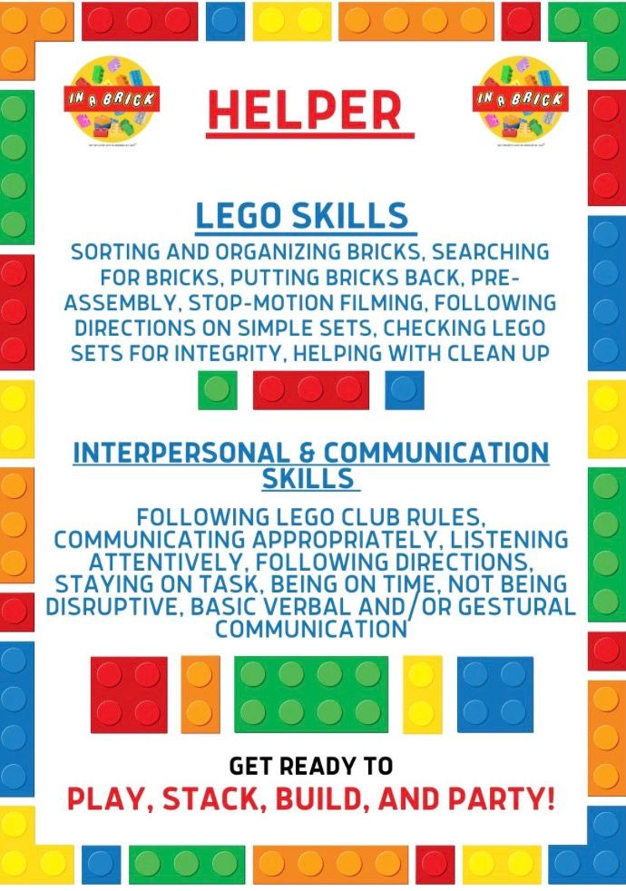

What we offer
Choose the format that best fits your child, school, group or celebration.
1:1 sessions
Individual support with confidence, communication, focus and flexible thinking.
Small groups
3–4 participants practising teamwork, roles, sharing and turn taking.
Group workshops
Up to 12 participants for schools, clubs and community groups.
School workshops
Structured brick play brought into education settings.
Seasonal camps
After-school, Easter, summer, Halloween and Christmas camps.
Parties and events
Birthday packages, adult build-and-sip and children’s wedding entertainment.

Session outcomes
Social skillsTeamworkCommunicationListeningTurn takingResilience
Ask about availability